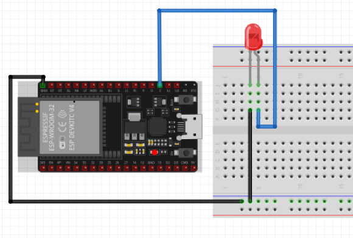

Praktik MicroPython ESP32
Pengontrolan LED Output & Timing Delay (MicroPython)
Pelajari cara mengendalikan aktuator LED menggunakan modul
machine.Pin, fungsi jeda
time.sleep(), serta pencetakan log via
print()
di REPL Thonny IDE.
Skema Rangkaian ESP32
GPIO 2 & GND
Visual Hardware
GPIO 2
STATUS: MATI (0)
Pilih Misi Praktikum MicroPython
3 Misi Utama
Misi 1: Menyalakan & Mematikan Lampu
Tugas Kamu: Pilih kode program lalu klik ikon Run pada Thonny IDE untuk memuat dan menjalankan script Python ke ESP32.
misi1a_nyala.py
MicroPython (ESP32)
Shell (MicroPython REPL)
MicroPython v1.23.0 on ESP32
Type "help()" for more information.
>>> [REPL Ready. Klik tombol Play (Hijau) di toolbar Thonny untuk mengeksekusi script]
Type "help()" for more information.
>>> [REPL Ready. Klik tombol Play (Hijau) di toolbar Thonny untuk mengeksekusi script]
MicroPython v1.23.0 | GPIO 2
MicroPython (ESP32) • COM3